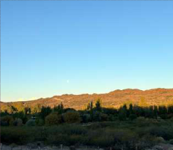
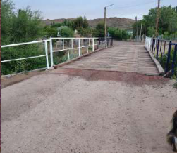
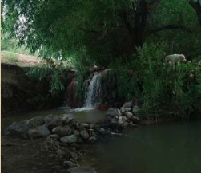
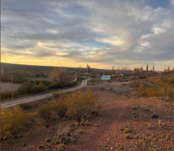

Yaminué es un lugar donde la naturaleza y la vida cotidiana se encuentran. En este articulo, podemos ver algunos de los espacios que hacen especial a este paraje.

Conexion con la naturaleza
Aca podemos ver como Yaminué tiene conexion con la naturaleza.

Barrio local
Aca se localiza uno de los barrios de Yaminué.

Viviendas de los habitantes
En esta foto se puede apreciar como algunas casas de sus habitantes se ven, tambien se alcanza a ver como estos humildes vecinos acceden a sus casas.

El puente
Este es el puente de Yaminué, uno de los lugares mas destacados.

El arroyo
Este es el arroyo, pero aca le decimos catarata; es uno de los lugares donde en el verano mas se disfruta.